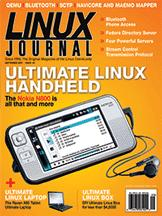

Shutdown Archive web server
Search:
Linux Journal
Issue #161/September 2007

Features
The Ultimate Linux Handheld
by Doc Searls and Jim Thompson
Much more than a successor to the Nokia 770.
The Ultimate Linux Laptop
by James Gray
256 levels of pressure for this Ultimate Laptop Tablet.
The Ultimate Linux Box
by Nicholas Petreley
DIY options for the Ultimate or Penultimate Linux Box.
Indepth
Hacking Cell Phones via Bluetooth Tools under Linux
by Patrick Davila
Want to exchange files between PC and cell phone?
Fedora Directory Server: the Evolution of Linux Authentication
by Jeramiah Bowling
Want an alternative to OpenLDAP?
A $7,000 Server Comparison
by Peter Arremann
Go big time with your server choice.
Introduction to Stream Control Transmission Protocol
by Jan Newmarch
Blessed by the IETF.
Columns
Reuven M. Lerner's At the Forge
Database Modeling with Django
Marcel Gagné's Cooking with Linux
Still Searching for the Ultimate Linux Distro?
Dave Taylor's Work the Shell
Baccarat Punto Banco
, Part II
Jon "maddog" Hall's Beachhead
Education
Doc Searl's Linux for Suits
Navigating with the Nokia N800
Nicholas Petreley's /var/opinion
The Ultimate Linux PVR
In Every Issue
Letters
UPFRONT
Tech Tips
New Products
Archive Index
Shutdown Archive web server
Search:
Copyright © 1994 - 2018
Linux Journal
. All rights reserved.